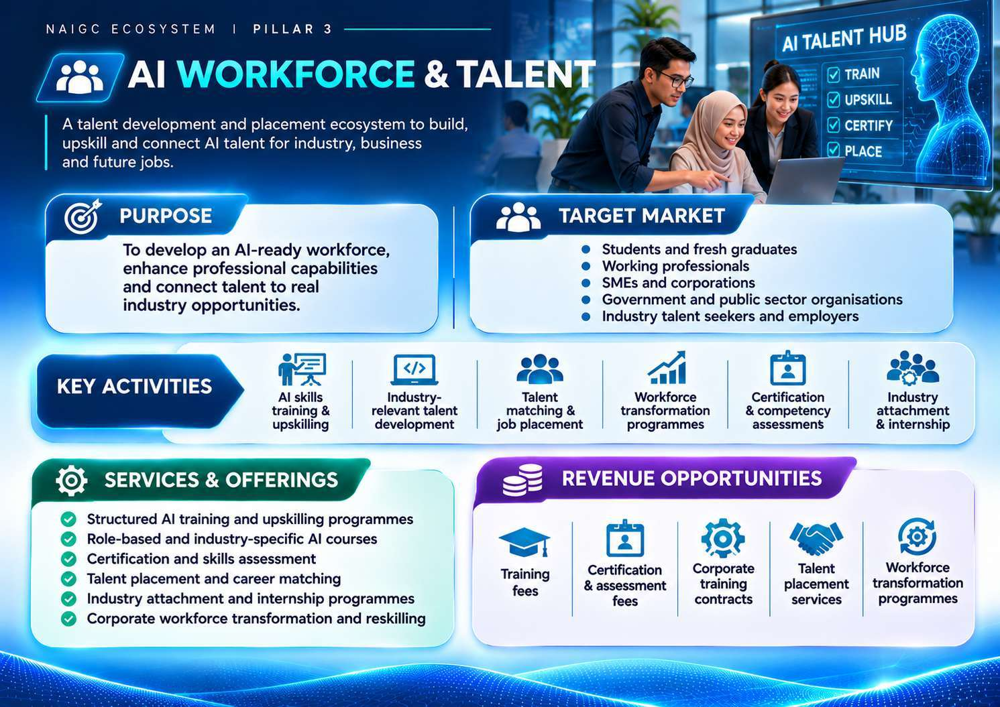

// 00 //
INITIALISING
CLICK OR WAIT TO ENTER 3D SPACE
NAIGC
3°09'N 101°42'E • SYS//NODE.03 WORKFORCE & TALENT
WORKFORCE
CORE HUB
☀
☾
BRIGHT MODE
« 02. STUDIO
04. SOLUTIONS »
WHAT ARE YOU LOOKING FOR?
TALENT PLACEMENT
CORP RESKILLING
APPRENTICESHIPS
COMPETENCY REGISTRY
FREELANCE GUILD
EXECUTIVE FORUM
★ STRATEGIC ROADMAP
ASK ME ANYTHING...
// 01 / 07 //
01
02
03
04
05
06
07
08
SYS//ONLINE • 60FPS
SOUND ON
×
NAIGC STRATEGIC ROADMAP // PILLAR 03: AI WORKFORCE & TALENT
OFFICIAL NATIONAL ARCHITECTURE BLUEPRINT

Suggested queries:
#Talent Placement
,
#AI Reskilling
,
#Apprenticeships
,
#Competency Assessment
,
#Headhunting